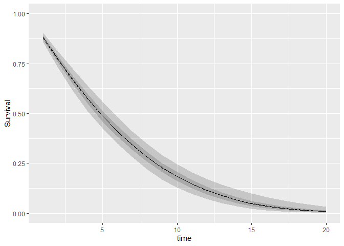

The goal of EvidSynthTB is to use Bayesian Multi-Parameter Evidence Synthesis (MPES) to estimate TB epidemiological parameters LTBI prevalence and active TB progression rate.
Installation
You can install the development version from GitHub with:
# install.packages("devtools")
devtools::install_github("n8thangreen/EvidSynthTB")General model structure
The framework provided by this package is more general that just applied to TB and can be generally thought of as consisting of two key components. The first is the uncertain starting state occupancy distribution. We assume that we do not directly observed the proportion of individuals in each state at time 0. The second is the uncertain probability of transition from the latent infection state to the active disease state. This is unknown because of the starting state distribution and other survival analysis uncertainty including right censored times.,
The diagram below depicts this model structure.

Mathematical formalisation
More formally, the two components can be thought of as two parts of a likelihood.
- A mixture cure model
- The starting state occupancy is represented by a binomial cure fraction model
Joint, independent and cut models
- Joint model
Free flow between components
L0 = [(1−π)fu(ti)]di[π+(1−π)Su(ti)]1 − di
where π is the cure fraction, di are the censoring identifiers, Su is the uncured survival function, fu is the uncured density function, and ti is the event time of either progression or end of follow up.
Lπ = Bin(x∣μ,σ2)
- Independent model
Disjoint models fit separately so that two probability of latent infection probabilities are inferred π and π0.
L0 = [(1−π0)fu(ti)]di[π0+(1−π0)Su(ti)]1 − di
Lπ = Bin(x∣μ,σ2)
- Cut-point model
[ref]
The idea is to cut feedback from the active disease progression component to the latent infection/state occupancy component.
Lπ = ϕ(μ̂∣logit(π),σ̂2)
General TB model
We want to obtain posterior distributions for LTBI prevalence, pl, and active TB activation rate, lambda. The other model parameters are:
-
Xm1: Cohort size (observed) -
Xp1: Number positive test results (observed) -
Xl1: Number latent TB (unobserved) -
XTB1: Number active TB (observed) -
Xm2: Cohort size (observed) -
XTB2: Number active TB (observed) -
p_pos: Test positivity (functional) -
pTB: Probability active TB (functional) -
sens,spec: Test sensitivity and specificity (prior)
A Directed Acyclic Graph of the model is given below.

Example
This is a basic example which shows you how to solve a common problem. Fit markov melding model using Stan with simulated artificial LTBI and TB progression data without covariate (age or ethnicity).
We generate some fake data.
# sample size
N <- 500
# disease-free censoring additional time
t_offset <- 10
# prevalence of ltbi
p_ltbi <- 0.3
shape0 <- 0.1
rate0 <- 0.1
# progression from LTBI to active tb times
progression_dat <-
data.frame(
t = round(flexsurv::rgompertz(N, shape = shape0, rate = rate0), 3)) |>
mutate(x = rbinom(n = N, size = 1, prob = p_ltbi), # ltbi status
## observe all progression times
d = ifelse(x == 1, 1, 0), # censoring status
# d = sample(c(0,1), size = N, replace = TRUE),
# d = ifelse(x == 0, 0, d),
t = ifelse(x == 0, t + t_offset, t)) |> # time
as_tibble()
# prevalence of LTBI
prevalence_dat <-
data.frame(mu_hat = boot::logit(rnorm(n = 10, mean = 0.3, sd = 0.05)),
sigma_hat = 0.01)We can now use the prevalence data and progression data to obtain posterior distributions.
out <- evidsynth_fit(prevalence_dat, progression_dat)
#>
#> SAMPLING FOR MODEL 'stan_output_fake_markov_melding' NOW (CHAIN 1).
#> Chain 1:
#> Chain 1: Gradient evaluation took 0.000409 seconds
#> Chain 1: 1000 transitions using 10 leapfrog steps per transition would take 4.09 seconds.
#> Chain 1: Adjust your expectations accordingly!
#> Chain 1:
#> Chain 1:
#> Chain 1: WARNING: There aren't enough warmup iterations to fit the
#> Chain 1: three stages of adaptation as currently configured.
#> Chain 1: Reducing each adaptation stage to 15%/75%/10% of
#> Chain 1: the given number of warmup iterations:
#> Chain 1: init_buffer = 15
#> Chain 1: adapt_window = 75
#> Chain 1: term_buffer = 10
#> Chain 1:
#> Chain 1: Iteration: 1 / 2000 [ 0%] (Warmup)
#> Chain 1: Iteration: 101 / 2000 [ 5%] (Sampling)
#> Chain 1: Iteration: 300 / 2000 [ 15%] (Sampling)
#> Chain 1: Iteration: 500 / 2000 [ 25%] (Sampling)
#> Chain 1: Iteration: 700 / 2000 [ 35%] (Sampling)
#> Chain 1: Iteration: 900 / 2000 [ 45%] (Sampling)
#> Chain 1: Iteration: 1100 / 2000 [ 55%] (Sampling)
#> Chain 1: Iteration: 1300 / 2000 [ 65%] (Sampling)
#> Chain 1: Iteration: 1500 / 2000 [ 75%] (Sampling)
#> Chain 1: Iteration: 1700 / 2000 [ 85%] (Sampling)
#> Chain 1: Iteration: 1900 / 2000 [ 95%] (Sampling)
#> Chain 1: Iteration: 2000 / 2000 [100%] (Sampling)
#> Chain 1:
#> Chain 1: Elapsed Time: 0.315 seconds (Warm-up)
#> Chain 1: 40.803 seconds (Sampling)
#> Chain 1: 41.118 seconds (Total)
#> Chain 1:
#> Warning: There were 1 chains where the estimated Bayesian Fraction of Missing Information was low. See
#> https://mc-stan.org/misc/warnings.html#bfmi-low
#> Warning: Examine the pairs() plot to diagnose sampling problemsWe can view the output.
